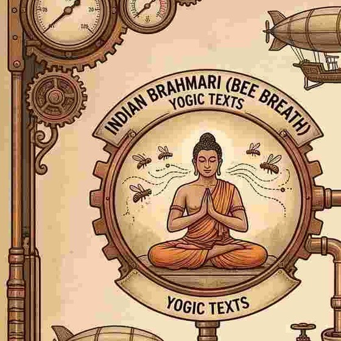
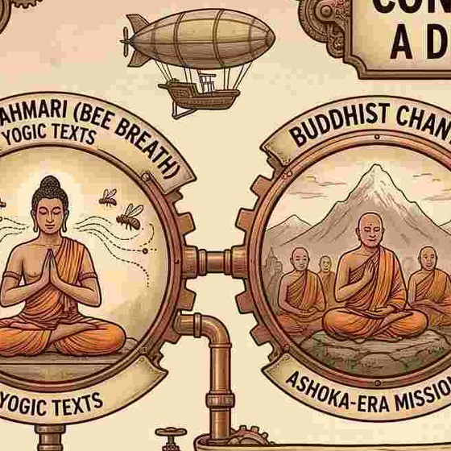
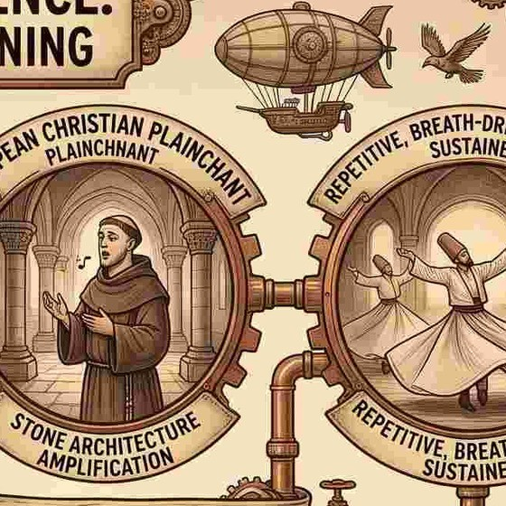
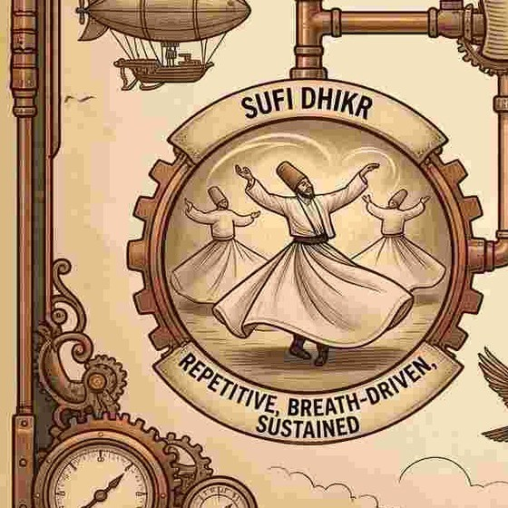
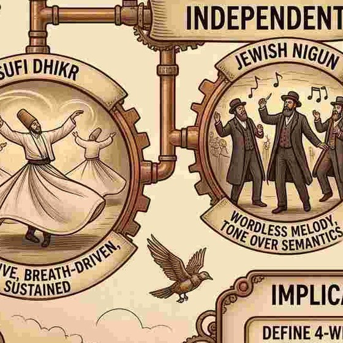

South Asia
Bhramari
A humming exhale named for the bee. Set out in yogic texts as a breathing practice for settling the mind before stillness.
Seven practices from places that had no contact with one another. Each one, in its own terms, does something similar: draws breath in slowly and lets it out long and voiced. Below is what each tradition does. What that might mean is a separate question, and it's kept separate.

A humming exhale named for the bee. Set out in yogic texts as a breathing practice for settling the mind before stillness.

Low sustained chanting, held communally. Carried along the monastic routes that opened during and after the Ashokan missions.

Unaccompanied single-line song. Sung inside stone architecture that lengthens the tone and returns it to the singer.

Remembrance. Names and phrases repeated aloud, breath-driven and sustained, in some orders carried with movement.

A melody without words. Tone is asked to carry what the tradition holds words are not sufficient for.
Long communal chant, held in groups and passed between generations directly rather than through a written text.
Daily structured study and recitation, spoken in pairs on a fixed schedule held over a period of years.
These are living traditions with living practitioners. None of them describes its practice in physiological terms. A person singing nigun is not toning a nerve. Someone in dhikr is not producing a gas. The descriptions above are what each tradition says it is doing. Anything past that is ours, not theirs.
A long voiced exhale is a cheap and repeatable way to change how the body settles. If that's true, it would be unsurprising for unconnected cultures to find their way to similar forms — the same way unrelated animals arrive at wings. That is a hypothesis about why the forms converge. It is not a finding, and it is not what any of these traditions teaches about itself.
Everything else on this page. The convergence is an observation. The mechanism connecting these seven practices to one another is proposed, not demonstrated.